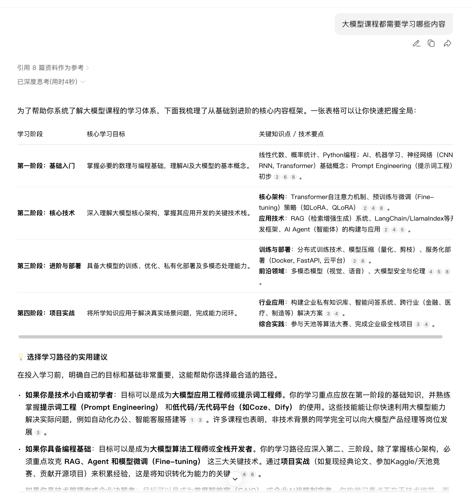
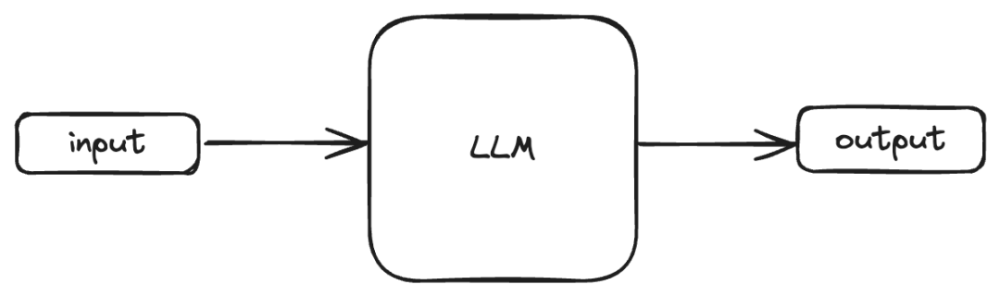
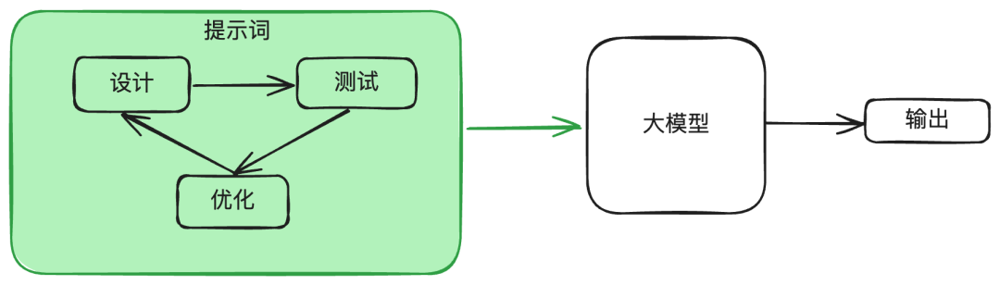

2.1 大模型提示词工程基础¶
学习目标¶
- 了解什么是提示词工程
- 掌握提示词工程的设计原则
一、概念¶
1 什么是提示词¶
- 提示词（prompt）是人工智能领域与大模型交互的核心工具，既包括技术场景中引导模型输出的指令，也涵盖科技术语解释中的限定性表达。在人工智能领域，Prompt指的是用户给大型语言模型发出的指令。例如，“「讲个笑话」”、“「用Python编个贪吃蛇游戏」”、“「写封情书」"等。
- 如下图，我们向模型提问“大模型课程都需要学习哪些内容”：

- 在这个案例中，包含两个内容，一个是用户输入的部分，一个是模型给与我们的回复。从广义上讲，这两部分都是提示词，只是角色不同，一个是用户、一个是模型。 在日常工作中，我们提到的“提示词”没有特殊说明的情况下，一般指的是用户输入的部分。
2 什么是提示词工程¶
-
提示词工程（Prompt Engineering）是一门通过精心设计和优化输入给人工智能模型（特别是大语言模型）的文本指令（即“提示词”），以系统性地引导模型生成更准确、相关、高质量输出结果的技术方法论。 提示词工程的出现可以提升模型输出的效果，一定程度上解决部分大模型幻觉问题。
-
提示词和工程和提示词的关系可以这么理解：提示词是你给AI的指令，而提示词工程则是系统化地设计、优化这些指令的一套技术，目的是优化提示词，让模型给我们返回更加优质的内容。（简单概括，提示词工程就是研究怎么写出更好的提示词）
-
提示词是提示词工程的实践对象：所有的工程方法和技巧，最终都要通过优化具体的提示词文本来体现。

-
提示词工程是提升提示词效能的保证：没有经过精心设计的提示词，就像一把未经打磨的钥匙，难以打开AI这座宝库。通过提示词工程，我们可以将模糊的意图转化为AI能够精确理解的指令，从而最大化激发模型的潜力。提示词工程实际上就是不断的重复设计、测试、优化，对提示词进行迭代，最终得到我们理想输出

- 在了解了什么是提示词和提示词工程以后，我们需要建立一个基本的认知：虽然看似简单，但实际上，Prompt的设计对于模型的结果影响很大。提示词工程不仅仅是关于设计和研发提示词。它包含了与大语言模型交互和研发的各种技能和技术。提示词工程在实现和大语言模型交互、对接，以及理解大语言模型能力方面都起着重要作用。用户可以通过提示词工程来提高大语言模型的安全性，也可以赋能大语言模型，比如借助专业领域知识和外部工具来增强大语言模型能力。
二、 提示词工程的原则¶
- 基于OpenAI官网文档，我们提炼出了5条大原则：
- 清晰的指令
- 文本参考
- 复杂任务拆分简单子任务
- 给模型"思考"的时间
- 借助外部工具
- 接下来，我们将对每一种具体的原则进行原理讲解以及举例，以帮助我们在日常工作准确的使用LLM。在本次的课程中，我们将使用网页版的deepseek或通义千问模型给同学们演示
1 清晰的指令¶
- 任何Prompt技巧，都不如清晰的表达你的需求。这就类似人与人沟通，如果话说不明白，不可能让别人理解你的思想。因此，写出清晰的指令，是核心。
- 那么如何写出清晰的指令呢？下面罗列几个小技巧：
1.1 详细的描述¶
- 当我们进行模型的提问时，不要描述的太笼统，而是尽量多的提供重要的详细信息或上下文.
比如，我想让大模型帮我生成一个可执行的健身计划，改善我久坐后腰部不适的问题。
- 不够详细的描述：
- 详细的描述：
请为我设计一个为期12周的健身计划。
背景：我是一名28岁的男性程序员，身高175厘米，体重75公斤，久坐少动，有轻微的腰部不适。
目标：主要目标是增肌5公斤，并改善腰部力量和体态。
约束：我每周只有周一、三、五晚上可以在健身房训练，每次不超过90分钟。我不喜欢长跑。
输出要求：请将计划分为三个阶段，每个阶段4周，列出每周的训练日程安排（包括具体动作、组数、次数），并附上简单的饮食建议（每日蛋白质摄入量不少于1.6克/公斤体重）。请用表格形式输出计划。
1.2 让模型充当某个角色¶
- 当我们使用大模型时，可以让模型充当一个角色，这样模型会更专业更明确的对你的问题进行回复.
比如，我想通过大模型持续生成AI算法面试题
1.3 使用分隔符标明输入的不同部分¶
- 中括号、XML标签、三引号等分隔符可以帮助划分要区别对待的文本，也可以帮助模型更好的理解文本内容。常用''''''把内容框起来
比如，我们进行一段翻译任务：
- 没有增加分隔符的输入
- 增加了分隔符的输入
1.4 提供例子¶
- 扔给大模型举例，然后让模型按照例子来输出
比如，我需要模型模仿某种既有格式（包括标签、语气、结构）来生成新的用户评论。
- 效果不佳的方式（仅用语言描述要求）
- 高效的方式（提供一个清晰的例子）
请完全参照下面这条示例评论的格式、标签和风格，为“无线蓝牙耳机”创造一条新的评论。
示例：
【产品】便携充电宝
【体验】充电速度真的快，半小时手机就差不多满了。体积比想象的小巧，放口袋里没压力。就是线得自己另配，有点麻烦。
【评分】4星
1.5 指定输出长度¶
- 可以要求模型生成给定目标长度的输出。目标输出长度可以根据单词、句子、段落、要点等的计数来指定。
比如我想了解运动有什么好处
- 效果不佳的方式
- 指定长度
2 文本参考¶
-
文本参考目的：基于文本文档，辅助大模型问答，降低模型"幻觉"（一本正经的胡说八道）问题。
-
经典的知识库用法，让大模型使用我们提供的信息来组成答案。
请根据三引号中的内容作为上下文回答问题：
"""
人工智能（AI）的核心驱动力是数据、算法和算力。数据是训练AI模型的基础原料，算法是处理数据、从中学习的计算模型，而算力则提供了执行复杂计算所需的硬件支持。目前，深度学习是AI领域最活跃的分支之一。
"""
问题：根据上文，人工智能发展的三个核心驱动力是什么？
- 我们把三引号中的内容改为变量，这个变量来自于知识库或者数据库的检索，这就是RAG（Retrieval-Augmented Generation），简易的模板如下：
3 复杂任务拆分为简单子任务¶
- 类似于人工，如果你作为领导，让下属一次性完成一个非常大的事，那么出错的概率是很大的，很多大项目也是这样，你甚至无从下手。所以我们经常在工作中，都要讲任务，拆各种细节、子任务、子目标等等。大模型也是同样的道理。
- 把复杂的任务给拆为更为简单的子任务，大模型会有更好的表现
比如，我们要制定一个新产品的市场推广方案：
- 效果不佳的方式，一次性笼统提问
- 优化后的方式，把一个复杂的任务拆分成多个简单子任务
请按照以下步骤，请为我们的新产品‘智能办公杯’（一款能显示水温、自动保温的杯子）制定一个市场推广方案：
第一步：市场与竞品分析
“请分析智能水杯市场的目标用户主要有哪些群体？并简要列出目前市场上2-3款主要竞品及其核心优劣势。”
第二步：用户画像与价值主张
“基于以上分析，请为我们的‘智能办公杯’描绘一个核心用户画像（包括 demographics 和使用场景）。并提炼出针对该用户群的3个核心价值主张（例如：精准控温提升饮水体验、久坐提醒培养健康习惯等）。”
第三步：制定推广策略
“现在，请为‘智能办公杯’设计一个为期一个季度的推广策略。要求包含：
渠道选择：针对第二步的用户画像，列出最合适的3个线上和线下推广渠道并说明理由。
核心信息：确定推广中要传递的核心信息。
关键活动：规划一个标志性的上市推广活动。”
第四步：预算与风险评估
“最后，请为上述推广策略草拟一个简单的预算分配框架（如市场费用、渠道费用等大致占比），并识别2个潜在的主要风险及应对思路。”
4 给模型"思考"的时间¶
-
给模型思考时间，。目的，让模型think step by step（一步步思考）.
- 比如，直接问你一道数学应用题，你肯定不能立即回答出问题，但是如果给你时间让你一步步分析并计算，那么你就很有可能把题解出来.
-
让大模型在输出答案时，不是直接给出结果，而是显式写出推理过程.
- 普通回答：直接给结论
- 优化后的回答：先一步一步推理，再得出结论
比如我们要解决一个复杂的商业计算问题
- 直接提问问题
我们公司生产一种产品，单价100元，单位变动成本40元，每月固定成本总额为12万元。我们目标月利润是10万元。请问需要销售多少件产品？如果我们的最大月产能只有2500件，这个目标现实吗？如果不现实，为实现目标利润，单价需要提高到多少元？
- 让模型一步步思考
请按步骤解决以下商业问题，清晰展示每一步的计算和推理过程。
问题：
我们公司生产一种产品，详情如下：
单价：100元/件
单位变动成本：40元/件
每月固定成本总额：120，000元
目标月利润：100，000元
请逐步回答：
计算实现目标利润所需的月销售量。
判断该销售量是否可行（已知最大月产能为2500件）。
如果不可行，在保持其他条件不变且产能满载（2500件）的情况下，计算为实现目标利润，产品单价应定为多少元。
5 借助外部工具¶
- 大模型并不是万能的，比如一些实时问题等等大模型不能很好的回答，所以需要一些外部工具来帮助处理。接下来我们将学习如何使用外部工具来增强ChatGPT的功能。
-
在实际应用中，常常会通过 工具调用（Function Calling） 或 插件化扩展 来增强 ChatGPT 的能力。
-
举几个常见的增强方式：
-
联网搜索工具
解决：模型不知道实时信息的问题。
例子：调用搜索引擎 API，获取最新新闻、论文、股市信息。
-
代码执行工具
解决：需要精确计算或数据处理时，模型自身“算得不准”的问题。
例子：调用 Python 解释器运行数学计算、绘图、数据分析。
-
数据库 / 知识库工具
解决：模型记忆有限，无法覆盖企业内部数据或特定领域知识。
例子：知识图谱、向量数据库（如 Milvus、FAISS）来存储和检索信息。
-
外部 API 调用
解决：专业需求，比如天气查询、航班查询、地图导航、医疗工具调用。
例子：ChatGPT 通过调用天气 API，告诉用户某地实时气温。
-
如以下代码，我们通过python代码模拟一个基于外部API实现调用“天气查询”功能的案例，需要注意：
- 这里的代码仅供展示，让同学们对Function call有一个简单的了解，该部分的代码相对比较复杂，且不是我们课程中的重点内容，不要去深究具体的实现细节。 在后续其他阶段的课程中会有详细实现过程。
- 此处的工具调用我们使用方法模拟api返回结果，并非是真实实现了天气查询，需要注意。
from openai import OpenAI
import json
# 1. 定义你的外部工具（函数）
def get_current_weather(location, unit="celsius"):
"""
获取指定城市的实时天气。
在实际应用中，你会在这里调用像和风天气、OpenWeatherMap等的API。
此处为简化，我们模拟一个API调用。
"""
# 模拟调用真实天气API返回的JSON数据
weather_info = {
"location": location,
"temperature": 28,
"unit": unit,
"condition": "晴朗",
"humidity": 65,
"wind_speed": 15
}
# 将字典转换为JSON字符串返回，方便后续处理
return json.dumps(weather_info)
# 2. 告诉ChatGPT可用的工具列表
# 这是最关键的一步，你需要清晰地向模型描述函数的功能和参数。
functions = [
{
"name": "get_current_weather",
"description": "获取指定城市的当前天气情况", # 函数描述至关重要，模型靠它来理解何时调用
"parameters": {
"type": "object",
"properties": {
"location": {
"type": "string",
"description": "城市名称，例如：北京、Shanghai",
},
"unit": {
"type": "string",
"enum": ["celsius", "fahrenheit"],
"description": "温度单位，摄氏度或华氏度"
}
},
"required": ["location"], # 指定哪些参数是必需的
},
}
]
# 3. 主对话逻辑
def run_conversation(user_query):
# 初始化对话消息列表
messages = [{"role": "user", "content": user_query}]
client = OpenAI(
api_key="api-key",
base_url="https://dashscope.aliyuncs.com/compatible-mode/v1",
)
# 第一次调用ChatGPT API：让模型判断是否需要调用函数
response = client.chat.completions.create(
model="qwen-max", #
messages=messages,
functions=functions, # 传入我们定义的工具列表
function_call="auto", # 让模型自动决定是否调用函数
)
response_message = response.choices[0].message
messages.append(response_message) # 将模型的响应加入对话历史
# 4. 检查模型是否要求调用函数
if hasattr(response_message, 'function_call') and response_message.function_call:
# 解析出模型希望调用的函数名和参数
function_name = response_message.function_call.name
function_args = json.loads(response_message.function_call.arguments)
# 5. 在你的程序环境中执行真正的函数调用
if function_name == "get_current_weather":
# 这里调用了我们上面定义的get_current_weather函数
function_response = get_current_weather(
location=function_args.get("location"),
unit=function_args.get("unit", "celsius")
)
# 6. 将函数执行的结果作为新的消息反馈给ChatGPT
messages.append({
"role": "function",
"name": function_name, # 指明是哪个函数的返回结果
"content": function_response, # 函数返回的数据
})
# 第二次调用ChatGPT API：将原始数据交给模型，让它生成对用户友好的回答
second_response = client.chat.completions.create(
model="qwen-max",
messages=messages,
)
return second_response.choices[0].message.content
else:
# 如果模型认为无需调用函数，则直接返回其回答
return response_message.content
# 7. 运行示例
if __name__ == "__main__":
user_question = "请问北京今天的天气怎么样？用摄氏度。"
answer = run_conversation(user_question)
print("AI助手：", answer)
执行结果：
- 如果把大模型当成一个大脑，使用Function call，好比给大脑装上了一具身体，拓宽大模型能力边界，让它不仅仅只是“思考”，还可以帮助我们“做事”。
三、 本节小结¶
- 本章节主要讲解了关于Prompt Engineering的使用技巧，包括提示词的概念、编写提示词的原则。是使用大模型文本处理任务的基础和内容，需要掌握和记忆。